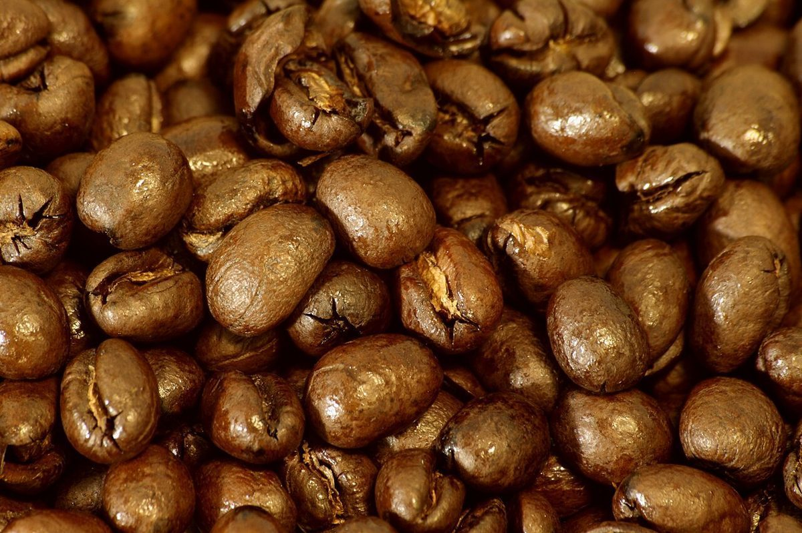

UTC+03:00
口コミ(イメージ例)
カフェという業種から自然に想像できる声を、制作側が創作したものです。
以下は制作側の創作で、実在のお客様の投稿ではありません。実際の口コミとは関係ありません。
営業時間などが分かったら、行ってみたいです。それまでは、Instagramの更新を楽しみにしています。
お店の写真が投稿されたら、ぜひのぞいてみたいです。どんなお店なのか、更新を待っています。
お電話で営業日を確かめてから、訪ねてみたいです。お店からのお知らせを楽しみにしています。
